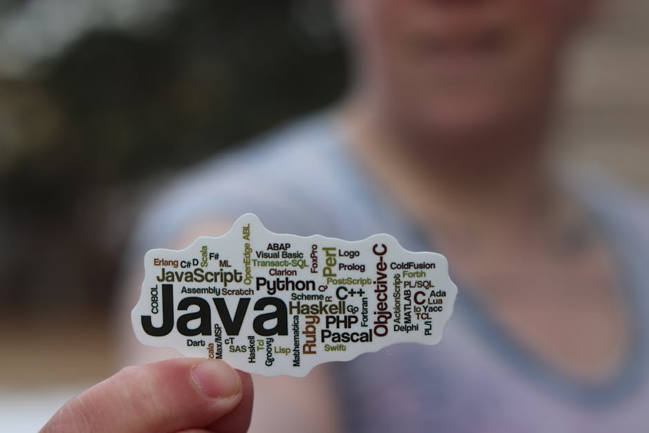

Tutorial: Basic SQL Queries
Learn the fundamentals of SQL (Structured Query Language) to interact with databases.
By Upingi Team / Tutorial Level: Beginner
Learn the fundamentals of SQL (Structured Query Language) to interact with databases.
By Upingi Team / Tutorial Level: Beginner
SQL is the standard language for managing and manipulating relational databases. It's essential for anyone working with data, including developers, data analysts, and database administrators.
Knowing SQL allows you to retrieve, insert, update, and delete data effectively.
Let's query some data!
The `SELECT` statement is used to fetch data from one or more tables.
Practice these `SELECT` variations on a sample table.
Besides retrieving data, SQL lets you add, change, and remove records.
Adding Data with `INSERT INTO`:
This statement adds a new row to a table. You specify the table, the columns to fill, and the corresponding values.
-- Insert a new customer
INSERT INTO customers (name, email, country)
VALUES ('Charlie', 'charlie@email.com', 'Canada');
-- If providing values for ALL columns in order, you can omit column names:
INSERT INTO customers
VALUES (4, 'David', 'david@email.com', 'UK'); -- Assuming ID is the first columnChanging Data with `UPDATE`:
This statement modifies existing rows in a table. You specify the table, the column(s) to change (`SET`), and crucially, *which* rows to change using a `WHERE` clause.
-- Update Charlie's email
UPDATE customers
SET email = 'charlie.updated@email.com'
WHERE name = 'Charlie';
-- Update multiple columns for customers in the USA
UPDATE customers
SET country = 'United States'
WHERE country = 'USA';Warning: Omitting the `WHERE` clause in an `UPDATE` statement will modify *all* rows in the table!
Removing Data with `DELETE`:
This statement removes existing rows from a table. Again, the `WHERE` clause is essential to specify *which* rows to delete.
-- Delete the customer named David
DELETE FROM customers
WHERE name = 'David';Warning: Omitting the `WHERE` clause in a `DELETE` statement will remove *all* rows from the table!
You now understand the basic SQL commands for querying (`SELECT`) and modifying data (`INSERT`, `UPDATE`, `DELETE`). This is the foundation for interacting with relational databases.
Further learning: